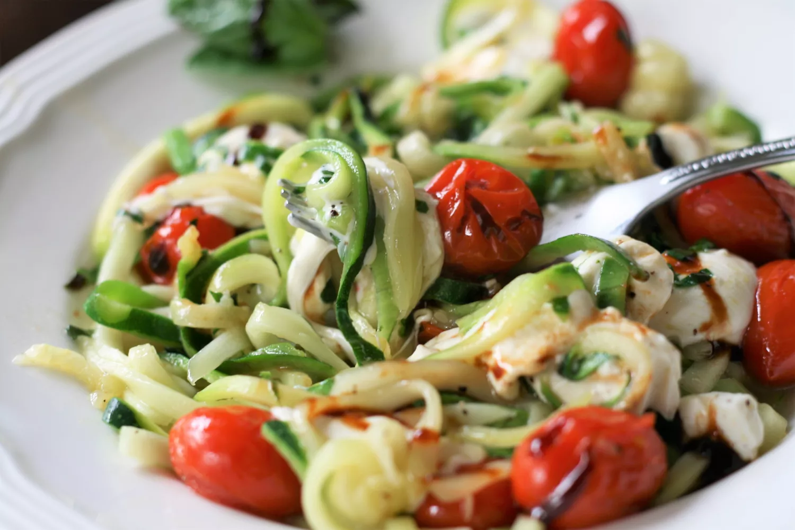

Warm Caprese Zoodles

Warm Caprese Zoodles
Caprese salad meets sauteed zucchini noodles in this super easy dish filled with basil, tomatoes, and gooey cheese. Make sure all your ingredients are ready to go, because this will be ready fast. Take care not to overcook the zucchini noodles to prevent them from becoming mushy. Adjust the basil to your liking.
Ingredients
- 2 tablespoons olive oil
- 1 (10 ounce) basket cherry tomatoes, halved
- 5 medium zucchini, run through a spiralizer
- salt and freshly ground black pepper to taste
- 1 (8 ounce) container mini mozzarella balls, halved
- ¼ cup fresh basil, cut into thin strips
- 2 tablespoons balsamic glaze
Steps
- Heat olive oil in a large skillet over medium-high heat. Add cherry tomatoes and quickly stir until tomatoes just begin to soften, 1 to 2 minutes. Add zucchini noodles, salt, and pepper. Keep cooking, stirring frequently, until zoodles are tender yet firm to the bite, 2 to 3 minutes.
- Remove from heat and stir in mozzarella and basil. Toss to coat. Divide zoodles between 4 bowls and drizzle with balsamic glaze. Serve immediately.
Return to main page